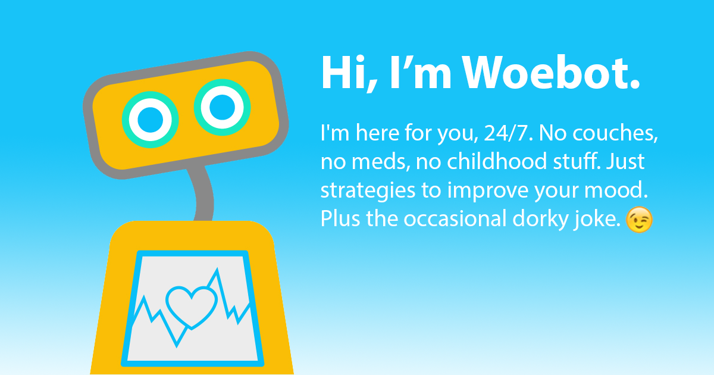

The biggest bets are on improving patient outcomes and reducing costs. Companies are applying machine learning to make better and faster diagnoses than humans. One of the best known healthcare technologies is IBM Watson. It understands natural language and is capable of responding to questions asked of it. The system mines patient data and other available data sources to form a hypothesis, which it then presents with a confidence scoring schema. Other AI applications include chatbots, a computer program used online to answer questions and assist customers, to help schedule follow-up appointments or aid patients through the billing process, and virtual health assistants that provide basic medical feedback.
How is AI going to be used in Healthcare
In this age of technologyartificial intelligence knows n bounds once thought a futuristic threat to humankind AI is changing and saving lives not intended t replace clinicians or clinical judgment AI serves the purpose to enhance and complement the very human interaction a provider and patient in health care AI is changing the game with its application and decision support image analysis and patient triage with
their ability to reduce variation and
duplicate testing decision support
systems quickly decipher large amounts
of data within the electronic medical
record AI technology is also taking the
uncertainty out of viewing patient scans
by highlighting problem areas on images
aiding in the screening and diagnosis
process artificial intelligence helps
with the issue of physician burnout by
collecting patient data via an app or
text messaging chat BOTS now ask
patients a series of questions regarding
their symptoms taking the guesswork out
of self diagnosis and saving both the
patient and provider time and money with
the AI integration working smarter
enables solutions to a variety of issues
for patients hospitals and the
healthcare industry
An examble of an AI application in Healthcare

Healthcare in Canada is free, but mental illness is not included in the service; which made seeing a therapist not affordable to the average person. Even if they can afford it,
it is a big hassle between scheduling an appointment, going there, and in some cases, opening up to the therapist!
Woebot are "on a mission to make mental health radically accessible to everyone".
They are a team of psychologists who worked at standford for 10years+. They left the clinic in the intention of making an online therpaist that is accessible and free. They "brought in storytellers, data scientists, engineers, and designers to combine their love of writing stories, AI, and robots with the intention of creating a companion (Woebot!) who can help people with their mental health."